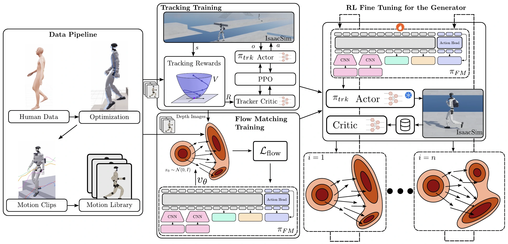
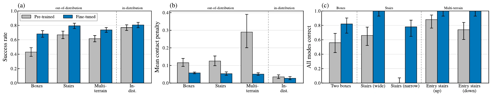
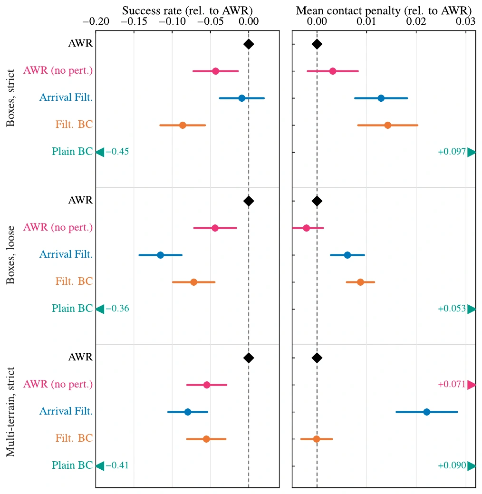
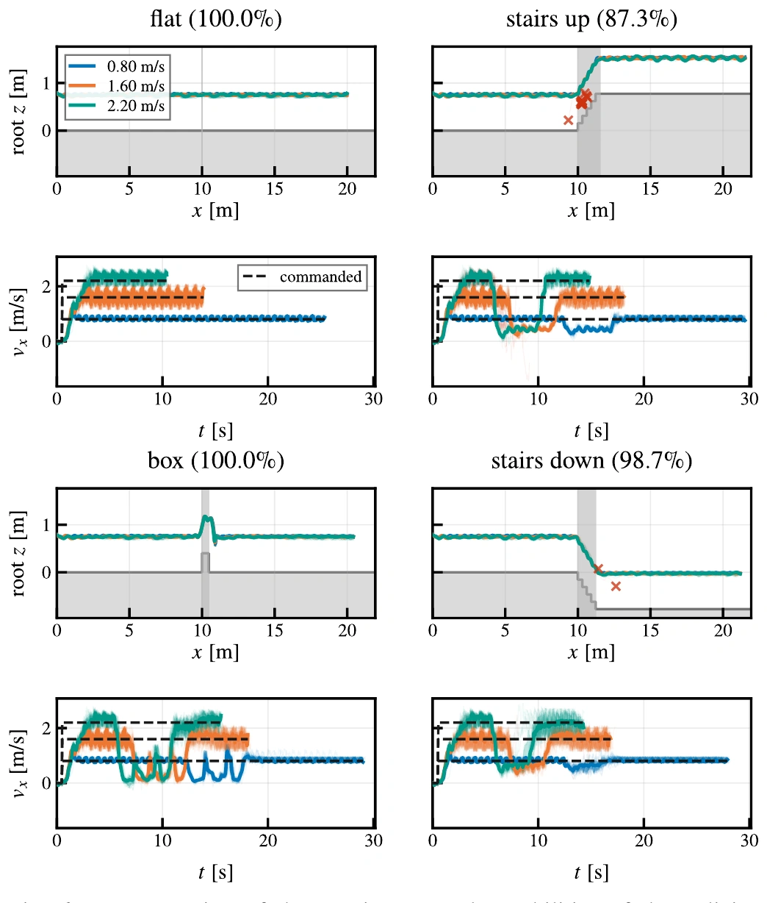

Department of Control and Dynamical Systems, California Institute of Technology
General purpose humanoids require locomotion controllers that are multi-skill, perceptive, dynamic, and robust enough to go anywhere humans can. In this work, we present a two layer locomotion architecture: (1) a perceptive flow matching motion generator plans whole body trajectories from raw depth images while a (2) perceptive tracking policy trained with control-guided RL follows these motions. Both policies are trained on a library of terrain consistent motion clips created with dynamically optimized human data which yields both accurate velocity tracking and terrain consistent references.
Our central contribution is a simple yet effective off-policy RL fine tuning loop that improves the motion generator. A structured search method is used with the generator to gather data for advantage weighted regression. This off-policy loop is much more sample efficient than on-policy residual fine tuning and improves terrain consistency on unseen geometries and skill compositions. We find that successful terrain traversals increased by up to 25 percentage points and skill selection improved by up to 80 percentage points.
By using raw depth images to perceive the environment no odometry or height maps are needed, and outdoor deployment is easy. With two cameras, the policy can see terrain coming from further away and adjust its velocity regardless of the commanded speed so it can traverse the terrain. A single policy pair enables a Unitree G1 humanoid to walk, run, stand, jump on and off of boxes, and traverse stairs in outdoor environments.
The pipeline has four parts: a data pipeline that turns human motion capture into a library of terrain-consistent motion clips, a tracker trained with CLF-RL to follow those clips, a generator trained with flow matching to produce them from depth images, and an RL fine-tuning loop that improves the generator. On the robot, the tracker runs at 50 Hz and the generator re-plans a 1.24 s whole-body trajectory every 0.24 s.

Deployed on a Unitree G1 with a ZED X (upper, forward-facing) and a ZED X Mini (lower, looking at the legs and ground). The generator and tracker run on an onboard Jetson Thor, with depth processed on a Jetson Orin. Indoors and outdoors use the same policies with no changes.
The generator outputs almost 3,000 numbers per plan, so Gaussian noise on its actions is a poor way to explore. Instead, rollouts are diversified by perturbing the conditioning (and storing the nominal conditioning as the label), resampling the flow matching initial noise, and spawning the robot in states the original policy might not reach.
A critic built on the generator's frozen prefix encoder is fit by fitted value iteration. Its advantages then weight the flow matching loss, in the style of advantage weighted regression:
\[\begin{gathered}\mathcal{L}=\frac{1}{B}\sum_{i=1}^{B}\frac{w_i}{H\ell}\,\big\lVert v_\theta(x^i_t,t_i,s_i)-v^*\big\rVert_F^2\\ w=\min\{\exp(\tilde A/\beta),\,L\}\end{gathered}\]
Rewards favor terrain consistency first (penetration and contact via signed distance fields). Velocity tracking and success only pay out when the plan is terrain consistent. Five iterations take about six hours on one H100.
Each comparison uses the same terrain, the same random seed, and the same frozen tracker. Only the generator differs. When a run falls, its side freezes on the last frame.

We compare AWR against filtered behavior cloning, arrival filtering (keep every rollout that reaches the goal), plain behavior cloning/self-distillation, and AWR without perturbed conditioning. AWR matches or beats every alternative in both success rate and terrain consistency. Plain BC fails badly, so some selection signal is essential. Removing the conditioning perturbations costs 4–6 points of success.
A residual policy trained with PPO on the full 2,728-dimensional output reached a success rate about 13 points lower than AWR, after using more than 160× the data and 30× the wall-clock time.

The velocity command does not need to know about the terrain. The upper camera sees obstacles coming, and the generator slows the robot down for stairs or a box jump, then returns to the commanded speed.

A generator trained without the forward-facing upper camera often runs into the box, because it cannot see it in time to slow down.
| Terrain | Both cameras | Lower only |
|---|---|---|
| Flat | 100% | 100% |
| Box | 100% | 57.3% |
| Stairs up | 82.7% | 71.3% |
| Stairs down | 97.3% | 88.0% |
| Command vx | Ours | Motion Bricks |
|---|---|---|
| (−1.0, −0.2] | 0.484 [0.357, 0.598] | 0.462 [0.346, 0.562] |
| (−0.2, +1.0] | 0.230 [0.191, 0.271] | 0.368 [0.308, 0.434] |
| (+1.0, +2.5] | 0.442 [0.312, 0.563] | 0.896 [0.813, 0.976] |
@article{olkin2026generate,
title = {Generate, Track, Improve: Perceptive Multi-Skill Humanoid
Locomotion with RL-Fine-Tuned Motion Generators},
author = {Olkin, Zachary and Compton, William D. and Ames, Aaron D.},
year = {2026}
}